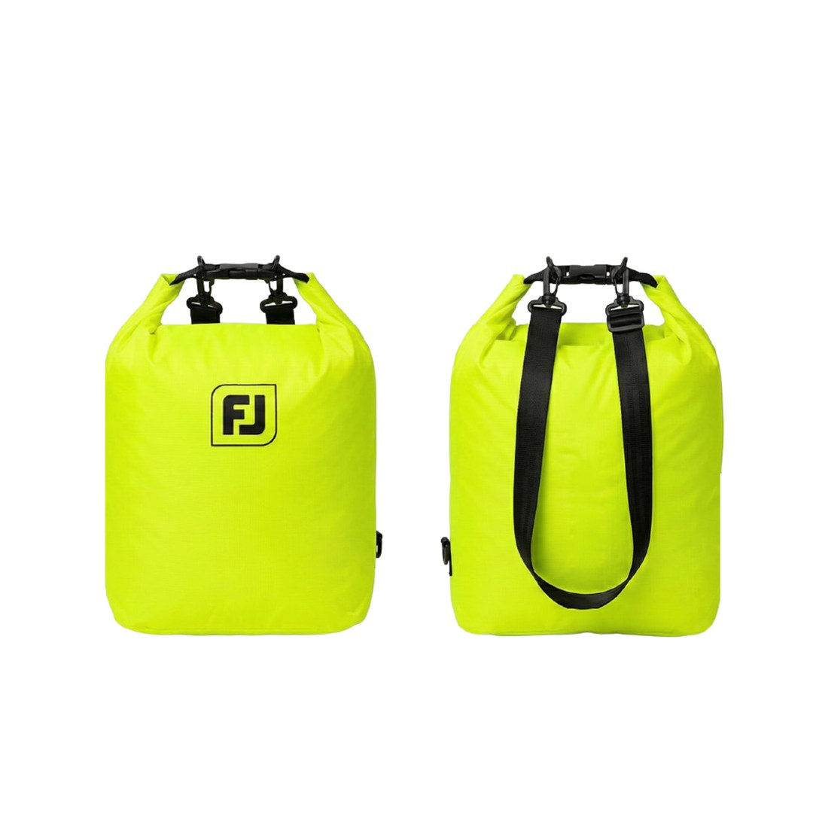

풋조이(FootJoy) 방수 워시 파우치 제작 사례
풋조이 방수 워시 파우치 제작

사진은 tiska.kr에 공개된 사례 사진입니다. · 원본 사례 보기(tiska.kr)
제작 정보
| 클라이언트 | 풋조이(FootJoy) |
|---|---|
| 품목 | 방수 워시 파우치 |
| 소재 | 폴리 겉감, 방수 안감 |
| 가공 | 방수 접합, 내부 칸막이, 걸이 고리 |
| 용도 | 여행 기념품, 호텔 |
| 최소 수량 | 메인 발주 500개부터 |
| 샘플·양산 | 가방·파우치류 기준 샘플 1주 · 양산 20일 |
| 품목군 | 가방·파우치류 |
제작 포인트
풋조이(FootJoy)의 방수 워시 파우치는 폴리 겉감, 방수 안감 소재에 방수 접합, 내부 칸막이, 걸이 고리 가공으로 만든 사례입니다.
공개된 용도는 여행 기념품, 호텔입니다.
같은 사양은 메인 발주 500개부터 제작하며, 가방·파우치류 기준 샘플 1주·양산 20일이 표준입니다. 수량이 늘수록 개당 단가가 내려가고, 단가는 도안 복잡도·가공 방식에 따라 견적 시 수량 구간별로 안내합니다.
500개 미만의 소량이 필요하면 자체 소량 제작 쇼핑몰 나도메이커(nadomaker.com)에서 제작할 수 있습니다.
같은 사양으로 만들려면
- 문의: 이 페이지 주소와 함께 품목·수량·예산·납기를 알려 주세요.
- 기획·디자인: 디자인팀이 무료 시안을 만듭니다.
- 사양 설계·견적: 소재·가공·규격·부자재를 정하고 수량 구간별 단가로 견적을 드립니다.
- 디자인 확정·샘플 제작: 실물 샘플로 색상·크기·마감을 확인합니다.
- 양산: 승인된 샘플을 기준으로 생산하고 QA/QC를 거칩니다.
- 검품·납품·사후관리: 검품 후 납품하고 추가 생산까지 전담 PM이 맡습니다.
디자인 파일은 AI·PDF·PSD 원본이 가장 좋고, JPG·PNG만 있어도 디자인팀이 도안 작업을 도와 드립니다. 행사일이 정해져 있다면 행사일 역산 일정 계산기로 디자인 확정 마감일을 먼저 확인해 보세요.
자료 안내
- 원본 파일: AI·PDF·PSD 원본을 가장 선호합니다.
- 이미지만 있을 때: JPG·PNG도 디자인팀이 도안 작업을 지원합니다.
- 디자인 시안: 무료이며, 디자인과 생산을 함께 진행합니다.
- 참고 자료: 이 사례 페이지 주소와 원하는 느낌의 레퍼런스 이미지를 함께 보내 주시면 사양을 맞추기 쉽습니다.